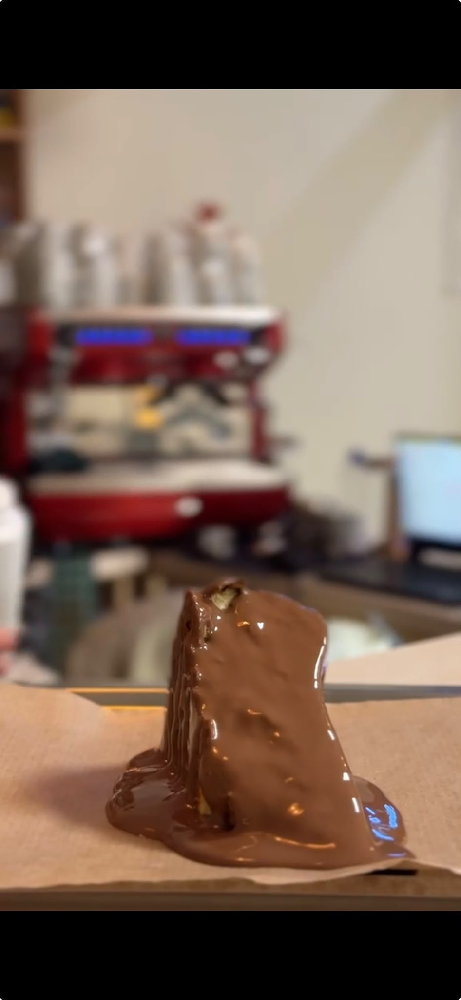

Waffle işin merkezi
Menünün en çok emek verdiğimiz kısmı burası. İddiamız Kocaeli'nin en iyisi olmak.
İki kardeşin, iyi bir waffle ve samimi bir sohbet üzerine kurduğu küçük bir kafe.

La'mondes'u Muhammet Mustafa Coşkun ve Betül Sena Coşkun kardeşler açtı. Henüz altı aylık genç bir işletmeyiz — her gün bir şey öğreniyor, her hafta bir şeyi daha iyi yapmaya çalışıyoruz.
Aklımızdaki iş çok karmaşık değildi: Kocaeli'nin en iyi waffle'ını yapmak ve bunu yaparken mahallenin en samimi esnafı olmak. Kapıdan giren herkesi tanımaya, adıyla selamlamaya çalışıyoruz. Bize göre iyi bir tatlının yarısı tarif, yarısı karşınızdaki insanın hâli hatırı.

Biz bir kafeyiz — ama ön plandaki tatlımız net: waffle. Hayalimiz insanların önce oturup kahvesini ya da soğuk içeceğini içmesi, sohbetini etmesi; sonra sıranın tatlıya gelmesi. Aceleye gelen bir waffle bize göre yarım kalmış demektir.
Bu yüzden menümüzü de böyle kurduk: sıcak ve soğuk içecek tarafı geniş, tatlı tarafında ise waffle'ın hakkını veren bir kısım var. İster tek başınıza bir kahve içmeye gelin, ister kalabalık bir masayla tatlı yemeye — ikisi de bizim için aynı.

Yakın zamanda menümüze San Sebastian ve kendi imzamızı taşıyan La'mondes Bardak eklendi. Üzerinde çalıştığımız birkaç lezzet daha var; hazır oldukça menüye girecekler.
Menüyü sürekli güncel tutuyoruz — sitedeki fiyatlar ve ürünler elimizle girdiğimiz, o günkü hâliyle geçerli bilgilerdir. Bir ürün geçici olarak biterse burada "tükendi" olarak işaretliyoruz ki boşuna yola çıkmayın.
Menünün en çok emek verdiğimiz kısmı burası. İddiamız Kocaeli'nin en iyisi olmak.
Müşteri değil misafir diyoruz. Tanıdık bir yüz olmak bizim için satıştan önce gelir.
Masanızda ne kadar oturacağınız sizin bileceğiniz iş. Kimse sizi kaldırmaz.
Bir şey bittiyse bittiğini söyleriz, yeni bir şey denediysek de öyle. Süsleme yok.
Her gün 11:00 – 00:00 arası açığız. Körfez'de, Ayık Sokak'tayız.